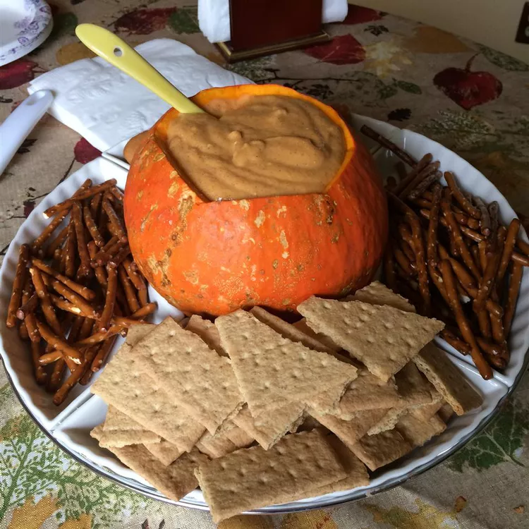

Pumpkin Dip

Description
This Halloween pumpkin dip makes an excellent appetizer for any fall holiday. Serve with ginger snaps.
Ingredients
- 2 cups confectioners' sugar
- 1 (8 ounce) package cream cheese, softened
- 1 (15 ounce) can solid pack pumpkin
- 1 tablespoon ground cinnamon
- 1 tablespoon pumpkin pie spice
- 1 teaspoon frozen orange juice concentrate
Steps
- Beat confectioners' sugar and cream cheese in a medium serving bowl with an electric mixer until smooth.
- Gradually blend in pumpkin.
- Mix in cinnamon, pumpkin pie spice, and juice concentrate until well blended.
- Chill in the refrigerator until serving.
Home